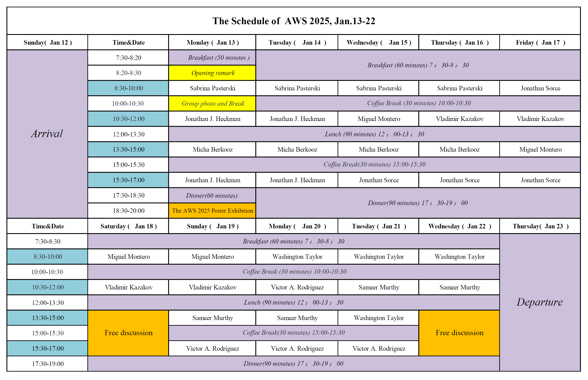

Schedule
The events are scheduled in Beijing time (UTC+8 / GMT+8). You can also find the schedule in PDF format here. 
Lectures
Micha Berkooz: A cordial approach to the SYK model
Abstract:
I will review recent progress regarding the double scaled Sachdev-Ye-Kitaev model and other p-local quantum mechanical random Hamiltonians.
These models exhibit an expansion using chord diagrams, which can be solved by combinatorial methods. I will describe exact results in these models, including their spectrum, correlation functions, and Lyapunov exponent. In a certain limit, these techniques manifest the relation to the Schwarzian quantum mechanics, a theory of quantum gravity in AdS2.
More generally, the theory is controlled by a rigid algebraic structure of a quantum group, suggesting a theory of quantum gravity on non-commutative q-deformed AdS2. I will conclude with a discussion of related universality classes, and survey some of the current research directions.
Jonathan J. Heckman: Top Down Approach to Symmetries in Quantum Field Theory and Gravity
Abstract:
We give an overview of recent advances in understanding generalized symmetries in the context of quantum field theory and quantum gravity. The overarching theme is to use a top down approach based on the UV complete framework of string theory to construct and study novel examples of such structures, especially at strong coupling, and especially in systems that are eventually coupled to gravity.
A rough outline for the lectures is as follows:
1) Overall motivation / introduction to engineering QFTs via extra-dimensional geometry
2) Top down approach to topological symmetry operators and heavy defects
3) Symmetry Topological Field Theories and their top down generalizations
4) On the fate of global symmetries in quantum gravity
Bonus Lecture (part of 4, time permitting):
How to Falsify String Theory at a Collider
Lecture notes:
You can find the lecture notes of Jonathan J. Heckman in PDF format here: Notes of Heckman, 2025 .
Vladimir Kazakov: Integrability of AdS5/CFT4, Quantum Spectral Curve and Fishnet CFT
Abstract:
The lectures are aimed at the description and some practical applications of integrability of the spectrum of conformal operators in N=4 super-Yang Mills theory in the ‘t Hooft limit.
After an introduction into the basics of the subject: AdS/CFT correspondence, Large N limit, (super)conformal symmetry, definition of conformal operators, I will present the one-loop computation of the dilatation operator and explain how to diagonalize it and thus extract the spectrum of anomalous dimensions, using the algebraic Bethe ansatz.
Then I will define the system of Baxter Q-functions, their analyticity properties and the so called QQ-relations among these functions, encoded into the Hasse diagram. This will allow to introduce the AdS5/CFT4 Q-system solving the problem of spectrum of conformal dimensions of a-priori any conformal operator in the planar limit. Example of operators in SL(2) sector of the theory will be considered.
If the time permits, I will present the so-called fishnet limit of gamma-twisted version of N=4 SYM, combining the double scaling limit of large twist and the weak coupling. Integrability of the resulting fishnet CFT and its generalizations allows computations of a large class of multi-loop Feynman graphs.
Lecture notes:
You can download the lecture notes of Vladimir Kazakov in PPT format here: Integrability Lecture notes I-IV .
The pdf version is also available here, while we recommend the PPT version in the above for more details and animations.
Miguel Montero: An Introduction to the Swampland Program
Abstract:
At first sight, it might seem that any quantum field theory, regarded as a low-energy effectve field theory (EFT), can be coupled to Einsteinian gravity. Over the past few years, a large body of work has challenged this view, arguing that not every EFT arises as the IR of a consistent theory of quantum gravity. EFT’s that do not descend from quantum gravity are said to be in the “Swampland”.
This lectures will provide a bird’s eye view over some of the recent efforts in delineating the boundaries of the Swampland, collectively known as the “Swampland Program”.
We first give an introduction to the oldest Swampland Conjecture, the absence of global symmetries, but from a modern point of view of topological symmetry operators and its generalization to non-invertible symmetries.
We then introduce a certain extension of the absence of global symmetries, known as the Cobordism Conjecture, and discuss its applications to constrain the Landscape of minimal supergravity in more than six dimensions.
Finally, we will discuss other conjectured properties of quantum gravity which we cover in this chapter, including Weak Gravity Conjecture, its phenomenological implications, and the Distance Conjecture, ranging from recent connections to EFT strings to the Emergent String Conjecture and implications for potentials.
Sameer Murthy: Black holes and their microstates in string theory
Abstract:
The broad goal of this lecture series is to describe the idea of the counting of supersymmetric black hole microstates in string theory. I will describe the main ideas that underlie this subject, from the original breakthroughs of Strominger-Vafa and Sen in the 1990s to more recent developments involving large quantum effects in near-extremal black holes.
Lecture notes:
You can find the lecture notes of Sameer Murthy in PDF format below:
Black holes and their microstates in string theory ,
Manuscript of Sameer Murthy-Lectures 1,
Manuscript of Sameer Murthy-Lectures 2,
Manuscript of Sameer Murthy-Lectures 3,
Sabrina Pasterski: Celestial Holography
Abstract:
The Celestial Holography program encompasses recent efforts to understand the flat space hologram in terms of a CFT living on the celestial sphere.
A key development instigating these efforts came from understanding how soft limits of scattering encode infinite dimensional symmetry enhancements corresponding to the asymptotic symmetry group of the bulk spacetime.
Historically, the construction of the bulk-boundary dual pair has followed bottom up approach matching symmetries on both sides.
Recently, however, there has been exciting progress in formulating top down descriptions using insights from twisted holography. These lectures will review salient aspects of the celestial construction, the status of the dictionary, and active research directions.
Lecture notes:
You can find the lecture notes of Sabrina Pasterski in PDF format here: Celestial Lecture notes I-IV.
Victor A. Rodriguez: 2d String Theories and Applications
Abstract:
In these lectures, I will review several distinct 2d string theories (broadly defined) and discuss how they serve as valuable theoretical laboratories for exploring fundamental aspects of string theory and quantum gravity. In particular, I will cover classic models such as the c=1 and type 0B string theories, as well as more recent developments, including the Virasoro minimal string and the complex Liouville string.
Jonathan Sorce: Operators in quantum field theory
Abstract:
These lectures will provide an introduction to the “algebraic approach” to quantum field theory. In this approach, one focuses on the way fields act on Hilbert space as operators, and studies the physics of quantum field theory using mathematical tools from functional analysis. I will present on the general mathematical structure, some concrete settings in which explicit calculations can be performed, and connections to an exciting modern topic of research in which operator algebras are used to study black hole entropy.
Lecture 1: Smeared fields and unbounded operators
Lecture 2: von Neumann algebras and modular theory
Lecture 3: Operators in free field theory
Lecture 4: (Bonus, depending on time) Types, traces, and renormalization
Washington Taylor: String theory compactifications in various dimensions
Abstract:
This series of lectures will describe supergravity and supersymmetric string theory vacua in various dimensions.
Lecture 1: Supergravity in 10 and 11 dimensions and various tools from geometry and string theory.
Lecture 2: Supergravity and string compactifications to 7 and 8 dimensions, introduction to F-theory.
Lecture 3: supergravity and N = 1 string vacua in 6 dimensions.
Lecture 4: Fluxes, N = 1 string compactifications in 4 dimensions.
Lecture notes:
You can find the lecture notes of Washington Taylor in PDF format below:
String theory compactifications in various dimensions